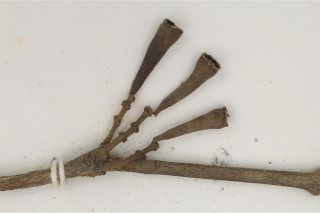
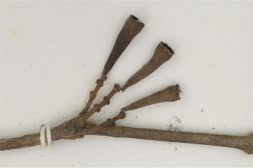

Images :

 

| Habit : | Trees to 12 m high. |
| Leaves : | Leaves simple , opposite , decussate ; petiole 0.4-0.6 cm long, slender, canaliculate , glabrous ; lamina 7.5 x 2.5 cm, elliptic or elliptic-lanceolate , apex acuminate or acute and twisted, base cuneate or acute , margin entire , pellucid gland dotted, chartaceous , glabrous ; midrib canaliculate ; secondary_nerves many, parallel , slender; intramarginal nerve present; tertiary_nerves admedially ramified to obscure . |
| Inflorescence / Flower : | Inflorescence axillary and terminal cymes ; flowers , white; pedicel 0.2 cm; calyx tube funnel shaped. |
| Fruit and Seed : | Berry , 1.2 cm long, ovoid - turbinate , bright scarlet, crowned with persistent calyx . |